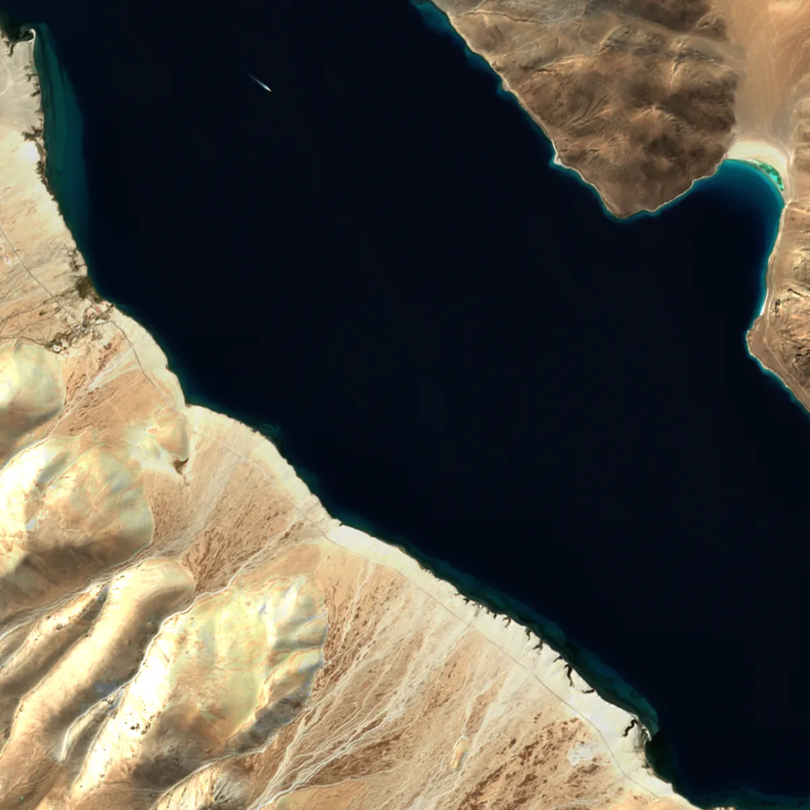
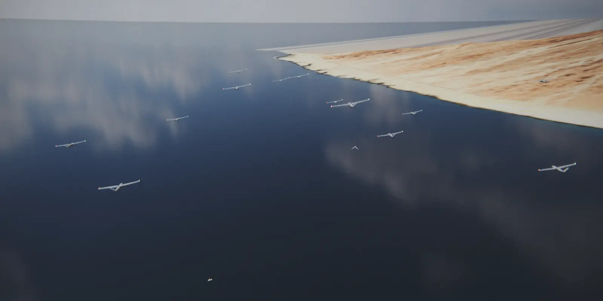
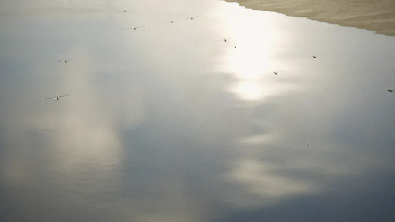
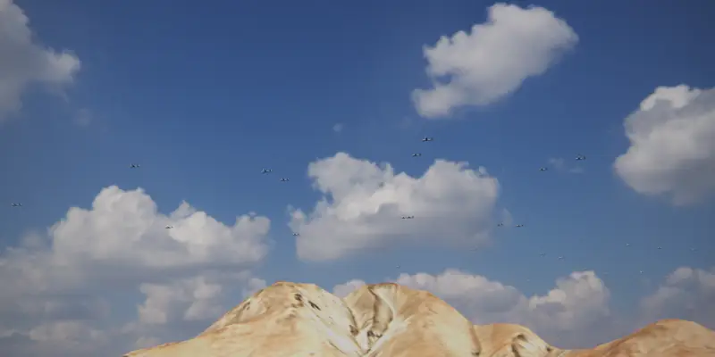
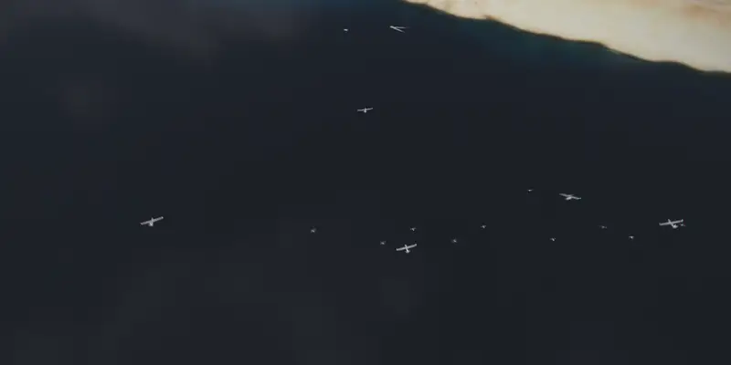

In plain words
How it works.
- 1
A person sets the goal.
"Search this valley."
- 2
The vehicles split the work.
No boss vehicle. Every one carries the plan.
- 3
Jammed? They carry on.
Without GPS or radio, they keep the mission and come home.
How they fly
A ring around a leader that isn’t there.
The “leader” is a point on the route. Every aircraft takes its own place around it, so losing any one aircraft breaks nothing.
01 · The problem
GPS is the first thing taken.
Illustrative model
Jamming
A cheap transmitter wipes out GPS for kilometres.
Illustrative model
Spoofing
A fake signal quietly drags a drone off course.
Illustrative model
Contested links
Cut the radio, and most drone teams fall apart.
02 · The mission
Step through the mission.
Scroll. Eight moments, one line each.

Seventy aircraft. One AI on every one of them.
- Aircraft
- 70
- Ground · boats
- 6 · 4
- GPS
- OK
- Radio
- NOMINAL
- Relays
- 0
- Lost
- 0
Built for seventy aircraft. Scattrnodes on every one.
Five wedges cross the lake. No leader, no base station. (Largest flown in simulation so far: 8.)
Air, ground and water, one plan.
Robots on the shore, boats on the water, aircraft above: one shared plan.
GPS goes dark.
Each vehicle keeps track of itself and its neighbours, and spreads out as it grows less sure.
The radio degrades.
Four aircraft climb to pass messages along.
A lead aircraft is lost.
Its followers join the other groups. Nobody has to tell them.
Split and search.
Two groups peel off to search land and water.
Eyes on the ground team.
A relay aircraft watches over the robots below.
It recommends. A person decides.
The operator supervises. No weapons in either product.
03 · Live
Fly the mission yourself.
Our real software, running in your browser. Press a failure and watch the fleet adapt.
Browser simulation, not a flight result
- Launch
- Assembly
- Formation
- Transit
- Split
- Search
- Rendezvous
- Reform
- Return
- Complete
Loading the Scattrnodes core…
Keys with the map focused: Space play · ←→ select · +− zoom · E engineering · F follow · G GPS · R radio · C cut · L lose · V leave formation · T formation · Z draw zone · 1–7 scenario
Scattrnodes Eyes console
This browser cannot run the live simulation (it needs WebAssembly and Web Workers). Below is a frame of it: seventy aircraft split into two groups over the search area with ground robots and boats on their stations, lanes assigned, and a lost aircraft’s lane taken over.

What is real code here, and what was written for this page
Scattrnodes code, unchanged: which vehicle takes which search lane or station, across air, ground and water, and who takes over after a loss (CBBA, with its domain rules: a robot never gets a water station); when a silent vehicle counts as lost; what a degraded or cut-off vehicle may still do, including how much it widens its spacing; what a group of this size may still do; the separation monitor that makes aircraft climb to a new layer; peer-aided navigation without GPS; and the assembly, relay and rendezvous rings.
Written for this page: the mission phases, the wedge, V, line and column shapes, the leader-follower steering, the radio and GPS models, and the scenario scripts. The search area is abstract. This is a browser simulation, not a flight result: Scattrnodes is built for a fleet this size, but the largest formation it has flown in simulation so far is the 8 aircraft in Evidence below. The same seed always gives the same run.
04 · Scattrnodes AI
Above the autopilot. Below the operator.
Every drone already flies itself. Scattrnodes makes them a team. Works with the PX4 and ArduPilot autopilots.
- Operator
Scattrnodes Eyes
Supervises · outside the decision loop · no weapons interface
- Scattrnodes AI · on every vehicle
World modelTask allocationMission planHealthCross-domainDegraded modes
- One vehicle abstraction
The same interface for every airframe and autopilot below it.
- Autopilot
PX4
AutopilotArduPilot
- Vehicles
Fixed-wing aircraft · ground robots · surface boats
05 · Scattrnodes Eyes
Supervises. Never decides.
The operator’s console. Nothing big happens until a person holds the button.
Outside the decision loop.
Lose the console, and the mission still goes on.
Air-gapped by default.
Runs on a rugged laptop with no internet.
No weapons interface.
Nothing in either product can command a weapon.
06 · Built for
Cover more ground. Miss less.



Missions the system is designed for. Renders; results so far are from simulation.
07 · Evidence
Every number, with where it came from.
Each figure below is recounted from the Scattrnodes repository by a script before this page can be published. If the repository disagrees, the page does not ship.
Recountrun at every publish
| Figure | Value | How it was measured | Source |
|---|---|---|---|
| Test missions flown in simulation | 768 | How it was measured555 passed, 141 failed, 72 skipped, across 114 campaigns. Every result row recounted. About 700 five-aircraft first-flight rehearsals flown since 17 September are scored separately. | Simulation |
| Orders from our software accepted by the autopilot | 2,000+ | How it was measuredCounted once from recorded runs. The logs behind it are not all kept, so unlike the other figures here we cannot recount it today. | Simulation |
| Aircraft in tight formation | 8 | How it was measuredAll six runs passed the separation check. That check measures distance in three dimensions, so side-by-side spacing is still unmeasured. We treat it as an open defect, not a result. | Simulation |
| Position error without GPS | 396–750 m → 25.5–39.0 m | How it was measuredAfter one day of fixes, from a written report and two named campaigns. Still not good enough to rely on. | Simulation |
| Core files changed by the two adapter commits | 0 | How it was measuredCounted from the repository history. Core edits in that period belong to a separate terrain-following change. | Code history |
| Problems written up with their causes | 251 | How it was measuredEvery problem found is written up with its cause and its fix. The bug log records which are still open. | Bug log |
| Flights on a real aircraft | 0 | How it was measuredNone yet. The first is planned for the next few weeks. | Flight |
08 · Status
Where it stands.
Validated in simulation and on a real flight controller wired to a simulator. Flight campaign pending: we have not flown a real aircraft yet, and you should hear that from us before anything else.
Still to fix: navigation without GPS is not accurate enough yet, and radio use is about twice our budget.
Nidhip SharmaFounder, HiveNodes
The next few weeks: out of the simulator and into the air.
- Next few weeks
First real flight with Scattrnodes in charge
- Month 6 after funding
Three aircraft in formation, in real wind
- Month 9 after funding
Flying without GPS, against a jamming rig
- Month 10 after funding
A five-aircraft field trial, run by an outsider
09 · Contact
Talk to the engineer.
We are raising a pre-seed round to fly it for real. Write to us.
Nidhip Sharma, Founder, HiveNodes
Every capability, and how far it is proven